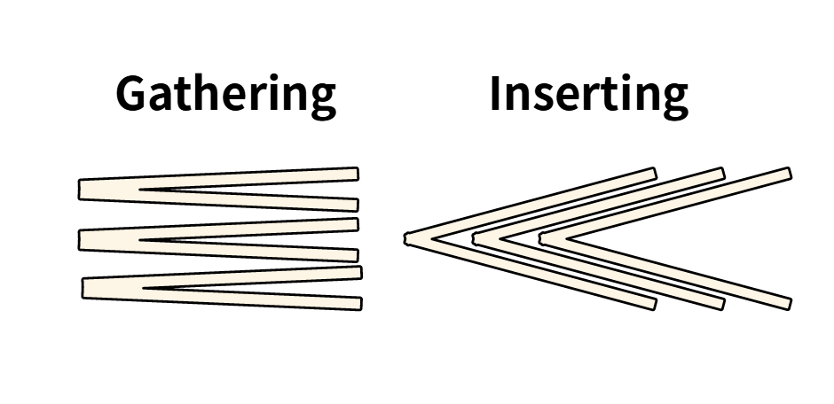
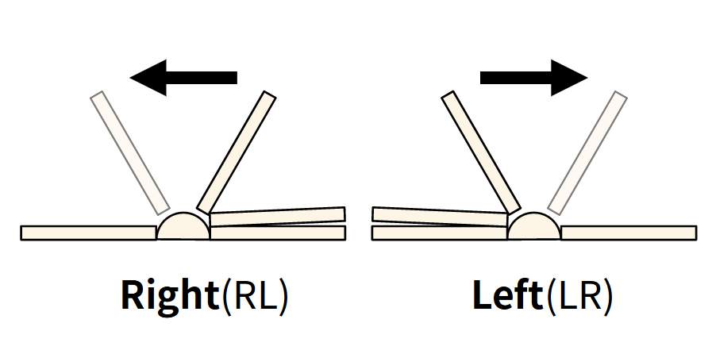
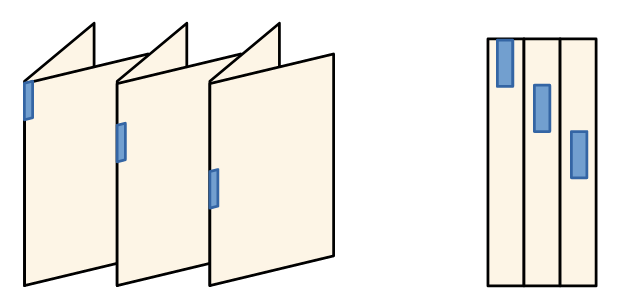

Terms of Book and Printing#
This document describes basic expressions of printing and press and their introductions.
Shape and Structure of Book#
Signature#
The signature is a contents block of a book, pamphlet, or booklet. That is, a group of sheets not separated by its contents, but a prefixed number of sheets. There are some synonyms, section, and gathering. This document will use signature.
Pages compose a signature and the signatures compose a book, booklet, …, et cetera. A single page can become a signature and a single singnature can compose a single book or booklet, (usually booklet).
Signature composition#
As written above, a signature is governed by its number of sheets. Single paper signature is \(2\) sheets signature with dual side printing. The number of sheets of signature must be a multiple of \(4\), practically considering fold. Therefore, permitted numbers are \(4, 8, 16, 32, 64\) and \(12, 24\). \(12, 24\) signatures differ in its fold progress with \(4, 8, 16, 32, 64\). Bigger sheets can be used \(>64\) to make a single signature, but it is not practical.
There are two types of methods to combine signatures, inserting and gathering. There are no differences among them after cutting their edges, but the order of pages are differ by type. The gathering does not affect to order of each signature but inserting does to match the correct ordering of pages.
The \(n\) sheets signature is composed of \(i\) time inserted \(f\) sheets signature.
If \(i = 1\), the signautre is an uninserted fold signature.
For example, \(16\) sheets signature has next variation.
\(1 \times 16\)
\(2 \times 8\)
\(4 \times 4\)
Riffle direction#
Riffle direction is a direction of riffling while you read the contents of a book. It depends on the reading direction of language. The most common direction is a horizontal, from left top to right bottom(HLTRB) direction. There were various reading directions by the language system. Most of them are not used in the recent era, but from left to right reading direction frequently used in many situations more than people think.
Belows are uncommon example languages in reading direction.
Asia, Korea, Japan, China … etc
East Asians used VRTLB (vertical, from right top to left bottom) system. Now, vertical writing is rarely seen in modern texts in Asia (it is different by the country), but as a design or a research work, they are still adopted in many works. For example, some Japanese mangas use vertical writing in their speech bubbles. There is a good different point in the speech bubble by the writing direction in Japan and Korea. Japan’s speech bubbles are vertically long while Korea’s are horizontally long. Korea also uses vertical writing once, but in the modern era is not as popular as in Japan. This difference is affecting to their speech bubble shape in comics. It is one example that how the cultural difference, in this case writing direction, is visually expressed.
Hebrew and Arabic
RL system
Ancient Egyt
Their system was very special. They used both direction LR and RL. The same characters can be written symmetrically by the direction.
Elder Island script, Ogham scripts
It also has an abnormal direction. Its direction is vertically from bottom to top.
From top to bottom, or from bottom to top are not affected by the order of pages if you riffle horizontally. However, whether the reading direction is LR or RL affects the page ordering considering reading efficiency.
The default setting of HornPenguin Booklet is a LR direction and supports RL.
Supporting RL is not complicated. Just reverse order the pages before applying to rearrange transformation to the pages.
Imposition#
The imposition means locating works of pages to paper and the result of those works. Unless you binding book in old Asia style (their method can use single paper as a basic signature), you must print the signature considering fold action. This is why the manuscript for a book should have a number of pages which is a multiple of 4.
Imposition layout update#
It will be worth to describe folding layout update process.
\(n\) sheets signature contains \(n\) number of pages.
Imposition of \(n\) sheets signatures are divided into two sections, the front page and the back page.
This process covers next signatures.
Let’s start from \(4\) sheets signature, its page layout is a \((1,2)\).
Front page: \([4, 1]\)
Back page: \([2, 3]\)
from these two matrix, we will get page imposition of \(8\) sheets signature.
Imagine the folding process of \(4\) sheets signature to make \(8\) sheets signature. We rotate 90 degrees and split them into \(2\) sub-sections. Interesting point is that, the \(k\)-th page of \(2n\) sheets signature always exists in \(k\)-th page of \(n\) sheets signature, \(1 \leq k \leq n\). In addition, the two pages, \(a, b\), seperated by the creasing line have next relationship, \(a+b = n+1\).
These are all we need. The remains are just following them.
Rotating#
Rotating elements of matrix can be divided into two steps, transpose and flip. See rotation of the elements of 90 degree in counter-clockwise direction,
Transpose:
Flip:
Expanding#
Now expand each line using \(a+b = n+1\). Basically, in a single number case, an additional number is left of the previous number.
Then, we get a front layout matrix of the \(8\) sheets signature. In the same way, let’s get a front layout matrix of the \(16\) sheets signature.
Rotating:
Expanding:
Note
There is a little different in \(n>4\) case. In expanding steps, you must divide row numbers into sub-groups whose length is \(2\). The prior number process is the same with \(n=4\) case but the second number is remained at right in expanding progress. For example, if we have \([13, 12, 4, 5, 1, 8, ...]\) row then, \([[13, 12], [4, 5], [1, 8], ...]\) and expand them.
See update steps of front matrix:
Rotating Page#
Imposition work includes folding work. That is, pages must be rotated in the right direction to match the direction of each page after the fold. In imposition layout, it is simple. Just rotating \(2, 4, 6, ..., 2k, ...\) rows of 180 degrees.
Printing markers#
Signature proof#
Signature proof is a ordering proof marker on the spine of signatures. It helps for people to arrange the signatures in right order and check missing signatures.
Trim marker#
Trim location indicator.
Registration marker#
Registration marker is added to check the registration of color printing of printing machine. Its color looks like the normal black color (CMYK(0, 0, 0, 100)) but actually, it is a special color called registration black, CMYK code is (100, 100, 100, 0). If they are perfectly fitted, it will look like normal black color.